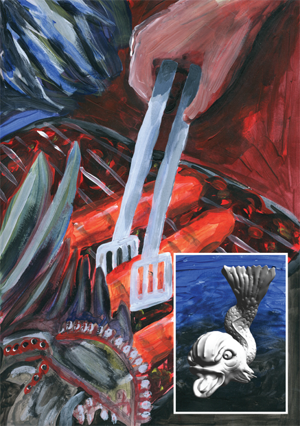

Frente al hospital Necker lo vi subir y correr entre las piezas con bebés malformados. Cuando me dijo al oído en un bar ruidoso de París que esperaba un bebé con otra, pero que había sido un accidente, todavía no éramos nosotros, ni siquiera lo había tocado, yo llevaba una vida de burguesa casi monógama. Y después del parto lo fui a ver a su casa y él cocinaba salchichas en un barbecue sobre una terraza de barro y su bebé todavía no estaba diagnosticado pero ya lloraba y se ahogaba. Yo veía su vestidor, sus abrigos, las botas de esquí de los dos apiladas a la entrada y sus papeles con sus nombres juntos, impuestos, documentos. Él no tenía ningún antecedente de haber matado a un perro como lo haría después, su ropa en orden, los collares, cepillos, valijas en común con su esposa. No había roto vidrios, no había chocado todavía, ninguna masacre a mi cargo, ni ropa rasgada, ni sangre en el culo. En el hospital caminamos unos pasos en los jardines colgantes, todavía las manos sin entrelazarse, todavía las lenguas sin haberse probado, los ojos en sus órbitas. Recordar esto ahora es como sacar tortugas del cogote del agua. Los bebés lloraban turbados, sin poder sorber, como cachorros. En cada pieza negra uno de ellos. En cada caja uno como sorpresa macabra. Marqué en el calendario el tiempo que pasó desde ese día para ver cuándo fue que empezó la fiebre. Y cómo la pasión emerge siempre de las tinieblas, igual que los monstruos marinos.
La muerte puede estar en una botella tirada en unas vías de metro, en un paragüero, en un puente romano sobre un rio alto. La nuestra fue una pasión como Anna Akhmatova, exactamente diecisiete meses sin moverse ni un centímetro de la cola en las cárceles de Moscú para verlo a su prisionero amado, Stalin nunca se lo devolvió, ella se colgó ahí y fue bajada y barrida por un empleado. Hay que contar las historias de pasión aunque sea con palabras de otro, las palabras siempre vienen de otro, hablamos y morimos sin haber dicho nada.
La primera vez que nos besamos fue la primera noche que nos vimos con el cielo apagado, habíamos cenado en un bar de la calle Oberkampf y unos árabes que pasaban le dijeron que me pida la mano. Ya estamos casados, explicamos. Pero puedo amar a dos hombres al mismo tiempo / pero puedo amar a dos mujeres a la vez, dijimos. Primero nos dimos con vasos de alcohol. Ya estaba el antecedente de habernos visto en un casamiento, de haber bailado tan altos que éramos, tan deslumbrantes que éramos en los cristales, en un vagabundeo al borde de un lago como retrato, en las claraboyas. Y llegó el primer beso sin testigos, en esa bodega, pero los lugares no existen, no existen las luces y al salir los reclamos de su mujer en el teléfono, los primeros agravios, la retórica vencida y alucinada de los celos, yo tirada en la vereda y su mujer diciendo que nosotros nos intercambiábamos palabras inflamadas y él explicando que no, que de dónde sacaba eso, que él estaba trabajando en el salón de ambulancias, me negaba delante de mis ojos mientras me miraba delirante. La grúa parisina se había llevado su auto. Tomar un taxi esa noche de septiembre, ahora perdida quién sabe dónde, un taxi que nos haga volar al depósito de autos mal estacionados de la ciudad. Que nos haga volar por el aire a la perdición. En la oficina de tránsito él pagaba el auto detrás de unas rejas. Te deseo, gritó, te deseo, como un mono trepado. Te deseo te deseo pero todavía no estaba loco. Y después volvió a toda velocidad. Hervido. Sin identidad. Sin parar en ningún semáforo, sin respetar ningún cartel, y ahí fue que mató a un perro negro que cojeaba en la ruta, pero siguió de largo, sin más horizonte que el cielo que se arrancaba a su paso.
Avenida Hoche. Royal Monceau. Él no me había visto aunque los dos habíamos llegado. Primer paso insostenible en el vestíbulo. El ascensor fue atacado por dos americanos demasiado ruidosos y mi emoción se contaminó. Me dirigí a la gran escalera. Los ancianos observándome. Ellos saben lo que perdieron, los viejos detrás de las puertas lujuriosas oliendo la pasión de los otros huéspedes. Chambre 1311. En cuatro horas este lugar no va a existir más. Se escaldará. Una rápida última mirada a los candeleros de araña y pinturas. Mis ojos colgados en sus ojos. Era compulsivo. Acercarse a su corazón por encima de mi cabeza. Era mío. Varios miles de kilómetros de viaje para tener ese corazón. El lodo de lava en el volcán activo. Como gritos de niños de terror nocturno después del choque del autobús.

Las manos marcadas en el empapelado. Así pasábamos las horas prendiendo y quemando lámparas. Esto es la pasión, dije, dentro de una bañera alemana, como un canto en otro idioma, como un viaje en moto por las rutas salvajes. Mi mujer escuchó ayer tu nombre en mi sueño pero hablé en tu lengua, español, y no me entendió nada. Se puso las botas para ir afuera a quemar arbustos que no están para ser liquidados, y casi quema la casa, el gato, el perro, su hija en su silla y su mujer. Y todas esas horas cambiando de habitación de cama de cuerpo. Ese inmenso fantasma la l´Alhambra de noche. Una sepultura bajo tallos y tierra como una pasión homicida. Habíamos nacido sin labios y los tuvimos al besarnos. Madrid, Londres, Berlín, Praga, Brujas, Valencia, Granada, Giverny, Crozon, Le Mont St Michel, Honfleur, Deauville, Tréauville y de nuevo Madrid. Me pregunté qué pasaría si, tendida ahora en plena sesión de reanimación él se enterara. La escena era esa. Él se enteraba de mi muerte, de las cuatro horas de intento de reanimación. Entonces yo me iba sin saber qué había dicho él, qué haría la hora posterior a la noticia, la noche siguiente, ese verano, la primera navidad y moría enloquecida.
Los celos son un niño destinado a experimentos tendido desnudo sus ojos inyectados con tifus. Los celos son vacas blancas y un retrasado intentando darles de pastar. Deshacerme del deseo para tener tiempo. Como un místico se tira a las baldosas para enfriarse y levitar pero está erecto y no puede. El deseo siempre está ahí como un borde de barranco, los hombres siempre se chuparon en todos lados, en las colinas y las pirámides, en el circo romano, se comieron el cerebelo a mordiscos. ¿Dónde estás que no respondés? Te dejo en herencia mis pensamientos más sucios y mis declamaciones más sacras. Llamame. Ahora mismo a la espera soy una muerta después de muerta.

Soy el alma de César en un cuerpo de mujer, me doy contra la cerca pero no veo mi sangre. Dejaste de responder, desapareciste. Cuántas veces la puerta estuvo semi-abierta y no la vi. Cuántas veces brilló afuera el cielo de los libres para atraparlo, para ir a internarme en las mediaciones de la autopista y convertirme en viajera o mendiga. El deseo es patético, yo misma ahora no puedo ni mirarme a los ojos, convertida en fanática, en ridícula. ¿Y seguís sin aparecer? Veo tu sombra en la casa y la persigo por todos los ambientes, voy flotando abrazando tu sombra, la violo. Él estaba con una asesina y no se daba cuenta. Yo tampoco me daba cuenta, qué gracia. Ahora salgo a buscarte. Serás un cerdo al que le vuelan los sesos.

Autrice : Ariana Harwicz
Traductions :
Peintures : Chloé Hauser
Edition : Marie Audran
Première édition : 2019, Rennes
Deuxième édition (20 exemplaires numérotés) : 2021, Rennes
Imprimé à Copie des Lices, Rennes
Adaptation numérique : Laura Wujek
Hébergé par netlify
Site internet : www.laliebreeditions.wordpress.com